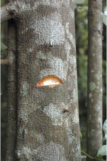
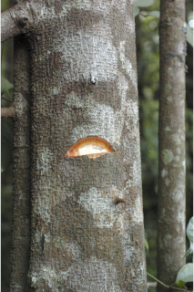
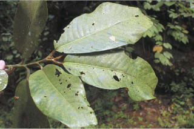
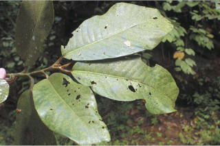
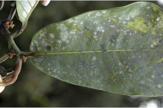
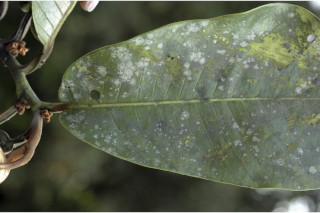

Botanical descriptions:
ಸಸ್ಯದ ವೈಜ್ಞಾನಿಕ ವಿವರ:
Botanical descriptions:
மரங்களின் பண்புகள்:
Habit:
ಪ್ರಕೃತಿ :
Habit:
வளரியல்பு:
Trees, often buttressed, up to 20 m tall, with stilt roots and pneumatophores or knee roots.
ಹಲವು ಸಂಧರ್ಭಗಳಲ್ಲಿ ಆನಿಕೆ ಬೇರುಗಳ ಸಮೇತವಿರುವ 20 ಮೀ. ವರೆಗಿನ ಎತ್ತರದ ಮರಗಳಾದ ಈ ಪ್ರಭೇದ ದಂಟು ಬೇರು ಮತ್ತು ವಾಯು ಸಾಗಣೆ ಅಥವಾ ‘ಉಸಿರಾಟದ’ ಬೇರುಗಳನ್ನು ಹೊಂದಿರುತ್ತವೆ.
Trees, often buttressed, up to 20 m tall, with stilt roots and pneumatophores or knee roots.
மரங்கள், பொரும்பாலும் தாங்கு வேர்களுடையவை (பட்ரஸ்டு), 20 மீ. உயரம் வரை வளரக்கூடியது, ஸ்டில்ட் வேர்களுடையவை மற்றும் மூச்சு (நிமெட்டொபோர்) வேர்களுடையவை.
Trunk & Bark:
ಕಾಂಡ ಮತ್ತು ತೊಗಟೆ:
Trunk & Bark:
தண்டு மற்றும் மரப்பட்டை:
Bark purplish black, lenticellate; blaze cream.
ತೊಗಟೆ ಕೆನ್ನೀಲಿ ಮಿಶ್ರಿತ ಕಪ್ಪು ಬಣ್ಣ ಹೊಂದಿದ್ದು ಸೂಕ್ಷ್ಮ ವಾಯು ವಿನಿಮಯ ಬೆಂಡು ರಂಧ್ರಗಳ ಸಮೇತವಿರುತ್ತದೆ;ಕಚ್ಚು ಮಾಡಿದ ಜಾಗ ಕೆನೆಯ ಬಣ್ಣ ಹೊಂದಿರುತ್ತದೆ.
Bark purplish black, lenticellate; blaze cream.
மரத்தின் பட்டை கரும்பர்புள் நிறமானது, பட்டைத்துளைகள் (லெண்டிசெல்லேட்) உடையது; உள்பட்டை கிரீம் நிறமானது.
Branches and branchlets:
ಕವಲುಗಳು ಮತ್ತು ಕಿರುಕೊಂಬೆಗಳು:
Branches and branchlets:
கிளைகள் & சிறிய நுனிக்கிளைகள்:
Branchlets terete, stout, rusty tomentose.
ಕಿರುಕೊಂಬೆಗಳು ದುಂಡಾಗಿದ್ದು ದೃಢವಾಗಿರುತ್ತವೆ ಮತ್ತುತುಕ್ಕು ಬಣ್ಣದ ದಟ್ಟವಾದ ತುಪ್ಪಳದಿಂದ ಕೂಡಿರುತ್ತವೆ.
Branchlets terete, stout, rusty tomentose.
சிறியநுனிக்கிளைகள் குறுக்குவெட்டுத் தோற்றத்தில் வளையமானது, தடித்தவை, துருப்போன்று உரோமங்களுடையது.
Exudates:
ಜಿನುಗು ದ್ರವ:
Exudates:
சாறு:
Sap red from cut end of bark, profuse.
ತೊಗಟೆಯನ್ನು ಕೆತ್ತಿದಾಗ ಕೆಂಪು ಬಣ್ಣದ ವಿಫುಲವಾದ ಸಸ್ಯ ರಸವಿರುತ್ತದೆ.
Sap red from cut end of bark, profuse.
மரத்தின் பட்டை வெட்டப்படும் போது சிவப்பு நிற பால் அதிகளவு சுரக்கிறது.
Leaves:
ಎಲೆಗಳು :
Leaves:
இலைகள்:
Leaves simple, alternate, distichous; petiole 2-4 cm long, stout, canaliculate, tomentose when young, later glabrous; lamina 20-60 x10-15 cm, elliptic-oblong, apex acute with blunt tip or acuminate, base rounded or subtruncate, margin entire, thickly coriaceous, glossy above, densely rusty tomentose beneath, later glabrous; midrib raised above; secondary_nerves 12-18 pairs, impressed above; tertiary_nerves obscure or percurrent when visible.
ಎಲೆಗಳು ಸರಳವಾಗಿದ್ದು ಪರ್ಯಾಯ ಮತ್ತು ಸುತ್ತು ಜೋಡನಾ ವ್ಯವಸ್ಥೆಯಲ್ಲಿದ್ದು ಕಾಂಡದ ಎರಡೂ ಕಡೆ ಎದುರು ಬದರಿನ ಲಂಬ ಸಾಲಿನಲ್ಲಿರುತ್ತವೆ; ತೊಟ್ಟುಗಳು 2 ರಿಂದ 4 ಸೆಂ.ಮೀ. ಉದ್ದ ಹೊಂದಿದ್ದು ಧೃಢವಾಗಿರುತ್ತವೆ ಮತ್ತು ಕಾಲುವೆಗೆರೆ ಸಮೇತವಿದ್ದು ಎಳೆಯದಾಗಿದ್ದಾಗ ದಟ್ಟವಾದ ಮೃದುತುಪ್ಪಳದಿಂದ ಕೂಡಿದ್ದು ನಂತರ ರೋಮರಹಿತವಾಗಿರುತ್ತವೆ;ಪತ್ರಗಳು 20 - 60 X 10 - 15 ಸೆಂ.ಮೀ.ವರೆಗಿನ ಗಾತ್ರವಿದ್ದು ಅಂಡವೃತ್ತ- ಚತುರಸ್ರದ ಆಕಾರ ಹೊಂದಿದ್ದು, ಮೊಂಡಾಗ್ರವುಳ್ಳ ಚೂಪಾದ ಅಥವಾ ಕ್ರಮೇಣವಾಗಿ ಚೂಪಾಗುವ ತುದಿ,ದುಂಡಾದ ಅಥವಾ ಉಪ ಛಿನ್ನಾಗ್ರ ರೀತಿಯ ಬುಡ,ನಯವಾದ ಅಂಚು, ದಪ್ಪನೆಯ ತೊಗಲನ್ನೋಲುವ ಮಾದರಿಯ ಮೇಲ್ಮೈ ಹೊಂದಿರುತ್ತವೆ, ಪತ್ರಗಳು ಮೇಲ್ಭಾಗದಲ್ಲಿ ಹೊಳಪಿನಿಂದ ಕೂಡಿದ್ದು ತಳಭಾಗ ತುಕ್ಕು ಬಣ್ಣದ ಮೃದು ತುಪ್ಪಳದಿಂದ ಕೂಡಿದ್ದು ನಂತರ ರೋಮರಹಿತವಾಗಿರುತ್ತವೆ ;ಮಧ್ಯ ನಾಳ ಮೇಲ್ಭಾಗದಲ್ಲಿ ಮೇಲೆದ್ದಿರುತ್ತದೆ; ಎರಡನೇ ದರ್ಜೆಯ ನಾಳಗಳು 12 - 18 ಜೋಡಿಗಳಿದ್ದು ಪತ್ರಗಳ ಮೇಲ್ಭಾಗದಲ್ಲಿ ಅಚ್ಚೊತ್ತಿದಂತಿರುತ್ತವೆ;ಮೂರನೇ ದರ್ಜೆಯ ನಾಳಗಳು ಅಸ್ಪಷ್ಟವಾಗಿರುತ್ತವೆ, ಸ್ಪಷ್ಟವಾಗಿ ಕಂಡಲ್ಲಿ ಎಲೆದಿಂಡಿಗೆ ಅಡ್ಡವಾಗಿ ಕೂಡುವ ಮಾದರಿಯಲ್ಲಿರುತ್ತವೆ.
Leaves simple, alternate, distichous; petiole 2-4 cm long, stout, canaliculate, tomentose when young, later glabrous; lamina 20-60 x10-15 cm, elliptic-oblong, apex acute with blunt tip or acuminate, base rounded or subtruncate, margin entire, thickly coriaceous, glossy above, densely rusty tomentose beneath, later glabrous; midrib raised above; secondary_nerves 12-18 pairs, impressed above; tertiary_nerves obscure or percurrent when visible.
இலைகள் தனித்தவை, மாற்றுஅடுக்கமானவை, இருநெடுக்கு வரிசையிலையடுக்கம் (டைஸ்டிக்கஸ்); இலைக்காம்பு 2-4 செ.மீ. நீளமானது, தடித்தவை, குறுக்குவெட்டுத் தோற்றத்தில் கேனாலிகுலேட், இளம்பருவத்தில் உரோமங்களுடையது, முதிரும் போது உரோமங்களற்றது; இலை அலகு 20-60 ´10-15 செ.மீ., நீள்வட்ட-நீள்சதுர வடிவானது, அலகின் நுனி கூரியது அதன் முனை மழுங்கியது அல்லது அதிக்கூரியது, அலகின் தளம் வட்டமானது அல்லது சதுர வடிவானது, அலகின் விளிம்பு முழுமையானது, தடித்த கோரியேசியஸ், அலகின் மேற்பரப்பு பளபளப்பானது, அடர்த்தியாக துரு உரோமங்களுடையது, முதிரும் போது உரோமங்களற்றது; மையநரம்பு மேற்புறத்தில் அலகின் பரப்பைவிட உயர்ந்து இருக்கும்; இரண்டாம் நிலை நரம்புகள் 12-18 ஜோடிகள், அலகின் பரப்பைவிட பள்ளமானது; மூன்றாம் நிலை நரம்புகள் கண்களுக்கு புலப்படாது அல்லது பெர்க்கரண்ட்.
Inflorescence / Flower:
ಪುಷ್ಪಮಂಜರಿ / ಹೂಗಳು:
Inflorescence / Flower:
மஞ்சரி / மலர்கள்:
Flowers unisexual, dioecious, urceolate; male flowers clusters of 10-20 flowers on woody peduncle, subumbellate; female flowers 2 or 3 in axillary fascicles.
ಹೂಗಳು ಏಕ ಲಿಂಗಿಗಳಾಗಿದ್ದು ಗಂಡು ಮತ್ತು ಹೆಣ್ಣು ಹೂಗಳು ಪ್ರತ್ಯೇಕ ಸಸ್ಯಗಳಲ್ಲಿರುತ್ತವೆ ಮತ್ತು ಹೂಜಿಯಾಕಾರ ಹೊಂದಿರುತ್ತವೆ;ಗಂಡು ಹೂಗಳು10 ರಿಂದ 20 ಹೂಗಳನ್ನೊಳಗೊಂಡ ದಾರುವಿನಂತಹ ವೃಂತದ ಮೇಲಿದ್ದು ಪೀಠಛತ್ರ ಪುಷ್ಪ ಮಂಜರಿಯಲ್ಲಿರುತ್ತವೆ;ಹೆಣ್ಣು ಹೂಗಳು 2 ಅಥವಾ 3 ಹೂಗಳನ್ನೊಳಗೊಂಡ ಅಕ್ಷಾಕಂಕುಳಿನಲ್ಲಿನ ಗುಚ್ಛಗಳಲ್ಲಿರುತ್ತವೆ.
Flowers unisexual, dioecious, urceolate; male flowers clusters of 10-20 flowers on woody peduncle, subumbellate; female flowers 2 or 3 in axillary fascicles.
மலர்கள் ஓர் பாலானவை, ஈரகம் கொண்டவை, ஆர்சியோலெட்; ஆண் மலர்கள் (10-20 மலர்கள்) கூட்டமாக தடித்த மஞ்சரிக்காம்பில் காணப்படுபவை, சப்அம்பல்லேட்; பெண் மலர்கள் 2 அல்லது 3 கூட்டாக இலைக்கோணங்களில் காணப்படுபவை.
Fruit and Seed:
ಕಾಯಿ / ಬೀಜ:
Fruit and Seed:
கனி / விதை:
Capsule, 10.5 x 5-7, oblong-ovoid, densely rusty tomentose; seed one, cylindrical, covered with bright orange-red lacerated aril.
ಸಂಪುಟ ಫಲ 10.5 X 5 – 7 ಸೆಂ.ಮೀ. ಗಾತ್ರವಿದ್ದು ಅಂಡವೃತ್ತ - ಅಂಡಾಕೃತಿಯಲ್ಲಿದ್ದು ದಟ್ಟವಾದ ತುಕ್ಕು ಬಣ್ಣದ ಮೃದುಗೂದುಗೂದಲುಗಳಿಂದ ಕೂಡಿರುತ್ತವೆ; ಬೀಜಗಳು ಸಂಖ್ಯೆ ಒಂದಿದ್ದು ವರ್ತುಲ ಸ್ಥಂಭಾಕೃತಿಯಲ್ಲಿರುತ್ತವೆ ಮತ್ತು ಕಡು ಕಿತ್ತಳೆ-ಕೆಂಪು ಬಣ್ಣದ ಆಳವಾದ ಸೀಳಿಕೆಗಳನ್ನುಳ್ಳ ಪತ್ರೆಯಿಂದ ಆವೃತವಾಗಿರುತ
Capsule, 10.5 x 5-7, oblong-ovoid, densely rusty tomentose; seed one, cylindrical, covered with bright orange-red lacerated aril.
வெடிகனி (கேப்சியூல்), 10.5 X 5-7, நீள்சதுர வடிவானது-முட்டை வடிவானது, அடர்த்தியாக துருப்போன்று உரோமங்களுடையது; ஒரு விதையுள்ள கனி, உருளை, விளிம்களில் பிளவுடைய ஆரஞ்ச்-சிவப்பு நிறமான பத்ரி (ஏரில்) உடையது.
Literatures :
ಗ್ರಂಥ ಸೂಚಿ:
Literatures :
சான்று ஏடு:
Gard. Bull. Singapore 23: 282. 1968; Gamble, Fl. Madras 2: 1214.1993 (re.ed); Sasidharan, Biodiversity documentation for Kerala- Flowering Plants, part 6: 393. 2004; Saldanha, Fl. Karnataka 1: 54. 1984; Cook, Fl. Bombay 2: 531. 1908.
Gard. Bull. Singapore 23:282.1968;Gamble, Fl. Madras 3:1214.1998 (rep.ed.); Sasidharan, Biodiversity documentation for Kerala- Flowering Plants, part 6:393.2004;Saldanha, Fl. Karnataka 1: 54.1984.
Gard. Bull. Singapore 23: 282. 1968; Gamble, Fl. Madras 2: 1214.1993 (re.ed); Sasidharan, Biodiversity documentation for Kerala- Flowering Plants, part 6: 393. 2004; Saldanha, Fl. Karnataka 1: 54. 1984; Cook, Fl. Bombay 2: 531. 1908.
Gard. Bull. Singapore 23: 282. 1968; Gamble, Fl. Madras 2: 1214.1993 (re.ed); Sasidharan, Biodiversity documentation for Kerala- Flowering Plants, part 6: 393. 2004; Saldanha, Fl. Karnataka 1: 54. 1984; Cook, Fl. Bombay 2: 531. 1908.

 


 



 
